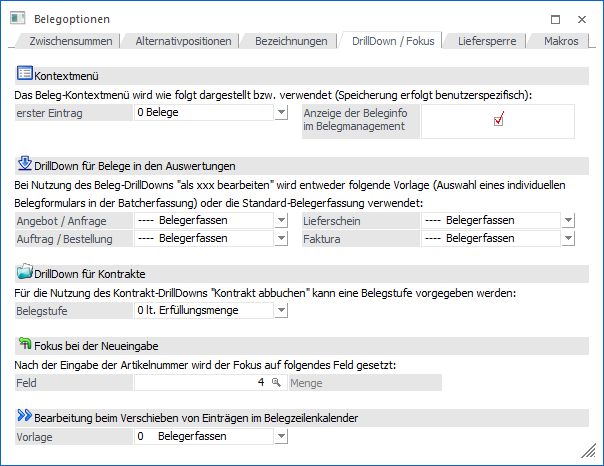
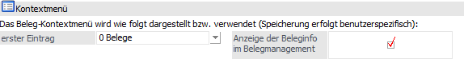
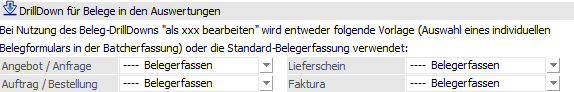
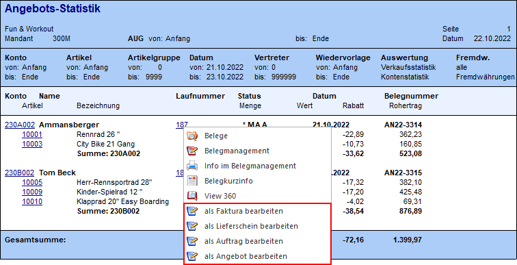
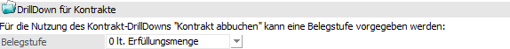
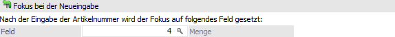
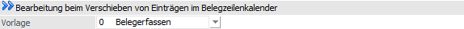

In dem Register "DrillDown / Fokus" kann das Programmverhalten bei Anwahl des Beleg-DrillDowns und die Fokussteuerung in der Belegerfassung definiert werden.

Kontextmenü

Die folgenden Einstellungen werden benutzerspezifisch gespeichert!
Ø erster Eintrag
An dieser Stelle kann definiert werden, was der erste Eintrag bei einem Beleg-Kontextmenü sein soll. Folgende Varianten stehen zur Verfügung:
ü 0 - Belege
ü 1 - Belegmanagement
ü 2 - Info
ü 3 - Belegkurzinfo
Ø Anzeige der Beleginfo im Belegmanagement
Mit Hilfe dieser Option kann definiert werden, ob die Beleginfo, welche per Beleg-Kontextmenü aufgerufen werden kann, im Belegmanagement geöffnet werden soll oder nicht.
Hinweis
In der WinLine mobile erfolgt die Anzeige immer im Belegmanagement.
DrillDown für Belege in den Auswertungen

Ø Angebot / Anfrage / Auftrag /Bestellung / Lieferschein / Faktura
In einigen WinLine Auswertungen wurde die Belegnummer mit einem sogenannten DrillDown versehen, bzw. der DrillDown wurde manuell hinterlegt (CWL Objekt - Belege). Mit Hilfe dieses DrillDowns kann über die rechte Maustaste der Beleg weiterberarbeitet werden (als xxx bearbeiten)
Beispiel

An dieser Stelle kann nun definiert werden, welche Vorlage für die individuelle Belegerfassung genutzt werden soll oder ob die Standard-Belegerfassung geöffnet wird. Pro Belegstufe stehen folgende Auswahlen zur Verfügung:
ü ---- - Belegerfassen
Es wird
die Standard-Belegerfassung geöffnet.
ü 0 - zuletzt verwendete
Vorlage
Es wird die individuelle Belegerfassung mit der zuletzt verwendeten
Belegvorlage geöffnet.
ü xxxxx - Belegvorlage (xxxxx =>
alle angelegten Belegvorlagen)
Es wird die individuelle Belegerfassung mit
dieser fest hinterlegten Belegvorlage geöffnet.
Hinweis
Wenn ein gedruckter Auftrag in der Stufe "Auftrag", ein gedruckter Lieferschein in der Stufe "Lieferschein" oder eine gedruckte Faktura in der Stufe "Faktura" bearbeitet werden soll, dann wird immer die Standard-Belegerfassung geöffnet.
DrillDown für Kontrakte

Ø Belegstufe
In einigen WinLine Auswertungen bzw. Programmen wurde die Kontraktnummer mit einem sogenannten DrillDown versehen. Mit Hilfe dieses DrillDowns kann über die rechte Maustaste der Kontrakt u.a. abgebucht werden. Welche Belegstufe hierbei verwendet werden soll, kann an dieser Stelle hinterlegt werden. Die Einstellung "0 - lt. Erfüllungsmenge" bezieht sich hierbei auf die FAKT-Parameter (Belege - Kontrakte - Option "Kontrakt ist erfüllt beim Erreichen der…").
Fokus bei der Neueingabe

Ø Feld
Mit Hilfe des Eingabefelds "Feld" kann gesteuert werden, auf welche Spalte der Fokus in der Belegerfassung gesetzt werden soll, nachdem eine Artikelnummer eingegeben wurde (Belegzeilen-Typ "1 - Artikel").
Hinweise
Sollte die hier gewählte Spalte in der Belegerfassung nicht vorhanden sein, so wird der Fokus automatisch in die Spalte "Menge" gelegt. Des Weiteren wird die Option in dem Programm "Batcherfassung von Belegen" nicht unterstützt.
Bearbeitung beim Verschieben von Einträgen im Belegzeilenkalender

Ø Vorlage
Wenn in einem Belegzeilenkalender ein Eintrag verschoben wird, so öffnet sich die hier hinterlegte Belegvorlage. Neben dem Eintrag "0 - Belegerfassen" stehen alle individuellen Formulare mit deaktivierter Option "Belegmitte als Tabelle" zur Verfügung. Eine Ausnahme bilden hierbei die folgenden Artikel- und / oder Belegtypen:
ü Artikeltyp "2 -
Produktionsartikel" und Artikeltyp "3 - Handelsstückliste"
Es wird
automatisch die Auswahl "0 - Belegerfassen" genutzt.
ü Zum Teil ausgeprägte Hauptartikel
(sogenannte "Zwischenartikel")
Es wird automatisch die Auswahl "0 -
Belegerfassen" genutzt.
ü Belegtyp "Fertigungsbelege"
Es
wird automatisch die Fertigungserfassung geöffnet.
Hinweis
Wenn in den FAKT-Parametern die Option "Lieferdatum mit Uhrzeit" aktiviert wurde, so kann neben dem Lieferdatum auch eine Uhrzeit in der Belegerfassung angegeben werden. Diese Uhrzeitenangabe steht in individuellen Formularen ohne Tabelle hingegen nur zur Verfügung, wenn in der "mesonic.ini"-Datei (im WinLine-Verzeichnis zu finden) folgender Eintrag vorhanden ist:
[Invoicing]
WithDate=1